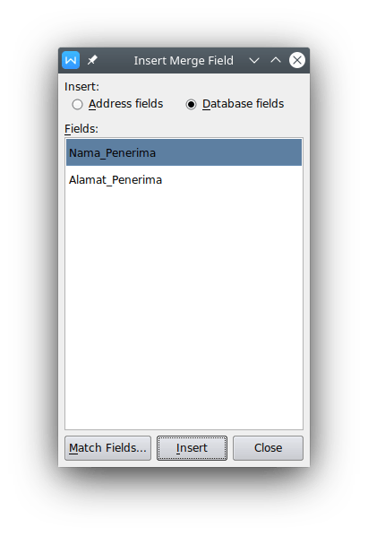
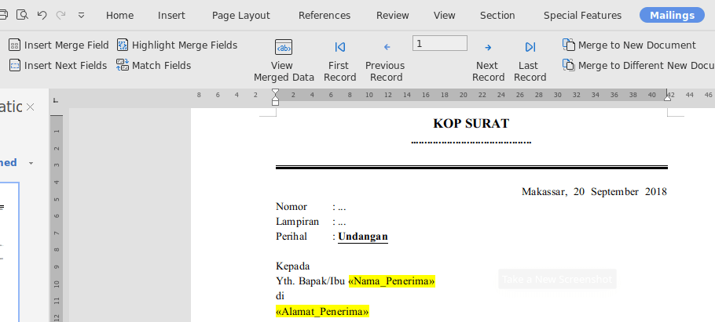
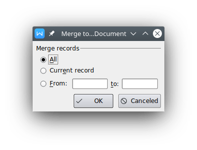

Mail Merge untuk Pembuatan Surat Massal
Word ProcessorBismillahirahmanirrahim.
Hal pertama yang harus diketahui pertama kali adalah mail merge itu sendiri. Mail merge atau dalam bahasa Indonesia dikenal sebagai surat massal merupakan fasilitas yang disediakan word processor untuk membuat surat massal di mana format dokumen yang dibuat hanya sekali, dan untuk pengisian bagian tertentu dalam surat seperti nama penerima dan alamatnya diisi menggunakan bantuan database yang dapat dibuat menggunakan spreadsheets atau dalam Ms. Office dapat menggunakan Ms. Excel atau Ms. Access.
Dokumen surat biasa ditemui baik di instansi pendidikan, pemerintahan, maupun di perusahaan. Contoh surat seperti Surat Undangan dapat memanfaatkan fasilitas mail merge dalam pembuatannya. Kenapa? Karena surat seperti itu ditujukan ke banyak orang dengan alamat yang berbeda-beda.
Membuat surat dengan mail merge, maka akan ada dua buah jenis file yang dibutuhkan, [1] Dokumen word untuk pembuatan format surat, dan [2] dokumen spreadsheets atau access untuk menampung data penerima surat. Jika menggunakan WPS Office, maka dokumen yang dibuat yaitu word dan spreadsheets.
Membuat Format dan Data Mail Merge
Berikut ini contoh format surat undangan, untuk bagian yang di-highlight atau yang ditandai merupakan bagian yang akan dibuatkan mail merge :
Berikutnya dibuatkan data mail merge melalui program spreadsheets, dalam hal ini menggunakan WPS Spreadsheets. Data yang dibuat yaitu nama dan alamat penerima surat. Berikut contoh datanya :
Membuat Mail Merge
Untuk membuat mail merge, pilih menu References - Mail Merge.
Setelah itu, akan muncul menu baru dengan nama Mailings. Lanjutkan untuk memilih data dengan mengklik bagian Open Data Source.
Setelah data source terbuka menu-menu yang ada akan aktif.

Melakukan Insert Merge Field
Untuk memasukkan data yang ada pada data source ke format surat yang telah dibuat, posisikan kursor pada bagian yang ingin diisikan data lalu pilih Insert Merge Field seperti berikut.
Akan tampil kotak dialog seperti berikut. Pada bagian Insert, pilih Database fields dan pada bagian Fields pilih data mail merge yang sesuai. Pada contoh pilih field untuk nama penerima. Lalu klik Insert dan Close. Lakukan langkah yang sama untuk bagian alamat penerima.
Berikut hasil dari insert merge field.
Contoh akhir seperti tampilan di bawah ini.
Mengaktifkan Data Mail Merge
Untuk mengaktifkan data dan menampilkan data yang ada dalam database, pada menu Mailings pilih View Merged Data. Hasilnya akan seperti berikut.
* Warna kuning yang ada sebagai highlight dapat dihilangkan pada menu Home - Text Highlight Color. Ini dibuat sebelumnya untuk menandai bagian mail merge.
Untuk melakukan navigasi dan melihat-lihat hasil dari mail merge, di menu Mailings terdapat First Record, Previous Record, Next Record dan Last Record. Dapat juga melakukan inputan langsung data yang ke berapa yang ingin dilihat.
Mencetak Mail Merge
Untuk memudahkan pengelolaan surat massal, lakukan Merge to New Document seperti pilihan pada gambar berikut.
Pada pilihan berikut, pilih All untuk menggabungkan surat massal yang telah dibuat pada sebuah dokumen baru.
Berikut tampilan surat massal pada dokumen baru pada tampilan Print Preview.
Simpan dokumen tersebut agar dapat dilakukan pencetakan pada suatu waktu.
Akhirnya kita telah berada pada bagian akhir artikel pembuatan data mail merge (surat massal), cara yang sama dapat dilakukan untuk pembuatan label seperti label undangan. Jika bermanfaat, silahkan share artikel ini. Terima kasih.